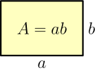
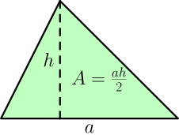
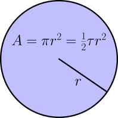
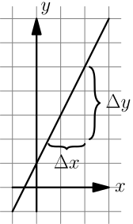
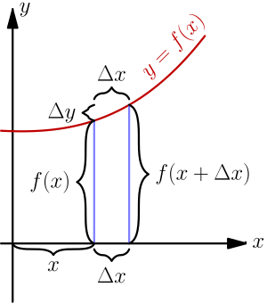
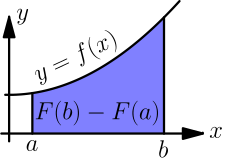
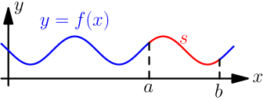
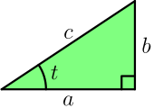

Summary¶
This page contains important and hard-to-remember things from other chapters all in one place to make them easier to find. You can look for stuff you need from this page or you can use it to find something interesting to read.
Note
This page contains summaries, not introductions. I don't expect you to read it and then master everything it's talking about, so also read the human-friendly introductions in other chapters when needed.
Handy Things¶
These things are straight-forward to prove, and you can see proofs of these here and there in this tutorial.
$$\begin{align}(a+b)^2 &= a^2+2ab+b^2 \\ (a-b)^2 &= a^2-2ab+b^2 \\ a^2-b^2 &= (a-b)(a+b)\end{align}$$Completing the Square¶
Deriving this formula is an exercise on the parabola section of the graphs page.
$$\begin{align}ax^2+bx+c = a\left(x + \frac{b}{2a}\right)^2 + c - \frac{b^2}{4a}, \quad a\ne0\end{align}$$Infinity and Indeterminate Forms¶
Here $x$ can be any finite number.
$$\begin{align}\frac x \infty &= \frac{x}{-\infty} = 0 \\ \infty+x &= \infty \\ \infty\cdot x &= \left\{\begin{matrix} \infty &\text{ if } x > 0 \\ -\infty &\text{ if }x < 0 \\ \end{matrix}\right. \\ \infty^x &= \left\{\begin{matrix} \infty &\text{ if } x > 0 \\ 0 &\text{ if } x < 0 \\ \end{matrix}\right. \\ x^\infty &= \left\{\begin{matrix} \infty &\text{ if } x > 1 \\ 0 &\text{ if } 0 \le x < 1 \\ \end{matrix}\right.\end{align}$$Common indeterminate forms: $\displaystyle\frac 0 0$, $\displaystyle\frac \infty \infty$, $\infty-\infty$, $0\cdot\infty$, $1^\infty$, $0^0$, $\infty^0$
Common Areas and Volumes¶
You may need to use integrals if you want to calculate an area that is not listed here.



The circle area is explained here, the cone volume is explained here, and everything else is explained here.
Slopes¶
Notation: if $x$ is first 3 and we change it to 4, the difference of these values is $\Delta x = 4-3 = 1$.

Only straight lines have slopes. The slope of the line in the picture above is $s = \frac{\Delta y}{\Delta x}$, so it determines how much $y$ changes compared to $x$ because $\Delta y = s \cdot \Delta x$.
Boring detail: vertical lines don't have slopes because the $x$ value is always the same, so $\Delta x = 0$ regardless of the two points chosen for calculating $\frac{\Delta y}{\Delta x}$ and we get division by zero.
Derivatives¶
Unofficially $dx$ is like $\Delta x$, but infinitely small. Use e.g. $\displaystyle \lim_{\Delta x \to 0}$ instead of $dx$ when doing actual calculations so the "smallness" is explicit and well-defined. The $\lim$ thing means the limit as $\Delta x$ goes to 0, e.g. $\displaystyle\lim_{a\to0} \textstyle\frac{2a}{a} = 2$ even though $\frac{2 \cdot 0}{0} = \frac{0}{0}$ is indeterminate.
Definition of derivative:
$$\begin{align}\frac{dy}{dx} &= \lim_{\Delta x \to 0} \frac{\Delta y}{\Delta x} \\ &= \lim_{\Delta x \to 0} \frac{f(x+\Delta x)-f(x)}{\Delta x} \\ &= \lim_{h \to 0} \frac{f(x+h)-f(x)}{h}\end{align}$$Notation:
$$\begin{align}\frac{d\left(f(x)\right)}{dx} = \frac{d}{dx} f(x) = f'(x)\end{align}$$Handy rules:
$$\begin{align}\begin{matrix} \frac{d}{dx}\ c = 0 & \frac{d}{dx}(c\ f(x)) = c\ f'(x) & \\ && \\ \frac{d}{dx}\ x = 1 & \frac{d}{dx} (f(x)+g(x)) = f'(x)+g'(x) & \\ && \\ \frac{d}{dx}\ cx = c & \frac{d}{dx} (f(x)-g(x)) = f'(x)-g'(x) & \\ && \\ \frac{d}{dx}\ x^c = c\ x^{c-1} & \frac{d}{dx} (f(x)g(x)) = f'(x)g(x) + f(x)g'(x) & \\ && \\ \frac{d}{dx} \displaystyle \left( \frac 1 x \right) = \frac{-1}{x^2} & \frac{d}{dx} \displaystyle \left(\frac{f(x)}{g(x)}\right) = \frac{f'(x)g(x)-f(x)g'(x)}{(g(x))^2} \\ && \\ \frac{d}{dx} \sqrt x = \frac{1}{2\ \sqrt x} & \frac{d}{dx} f(g(x)) = f'(g(x))g'(x) \\ && \\ \frac{d}{dx} \sin(x) = \cos(x) & \frac{d}{dx} e^x = e^x \\ && \\ \frac{d}{dx} \cos(x) = -\sin(x) & \frac{d}{dx} a^x = a^x \ln(a) \\ && \\ \frac{d}{dx}\ln(x) = \displaystyle\frac 1 x & \frac{d}{dx} \log_b(x) = \displaystyle\frac{1}{x\ln(b)} \\ \end{matrix}\end{align}$$See Also
Some of the simplest rules are explained in the first derivative chapter and most of the other rules are proved in the second derivative chapter. Sin and cos derivatives are proved here and the logarithm stuff is proved here.
Note that if you have something like $(2x)^2$ as opposed to $x^2$ you need to use the $\frac{d}{dx} f(g(x)) = f'(g(x))g'(x)$ rule; that is, remember to multiply by $g'(x)$. For example:
$$\begin{align}\frac{d}{dx} (2x)^2 = 2(2x)^{2-1} \cdot \frac{d}{dx}(2x) = 2(2x) \cdot 2=8x\end{align}$$Integrals¶
Area under curve $y=f(x)$ from $a$ to $b$ is $F(b)-F(a)$ where $F$ is an antiderivative of $f$, i.e. $F'(x)=f(x)$. If $F(x)$ is one antiderivative of $f$, then all antiderivatives are of the form $F(x)+C$ with different values of $C$.
Notation:
- $\int_a^b f(x)\ dx$ is the area in the picture.
- $\int f(x)\ dx = F(x) + C$ where $F'(x)=f(x)$.
- $\left[F(x)\right]_a^b = F(b)-F(a)$.
Example (remember that $\frac{d}{dx} x^2 = 2x$):
$$\begin{align}\int_1^3 2x\ dx = \left[x^2\right]_1^3 = 3^2-1^2 = 9-1 = 8\end{align}$$Here are some handy antiderivative rules. The $a$ can be any constant and it has nothing to do with the left side of an area, and $f$ and $g$ can be any continuous functions.
$$\begin{align}\begin{matrix} \int 0\ dx = C & \int a\ f(x)\ dx = a \int f(x)\ dx \\ && \\ \int a\ dx = ax + C & \int(f(x)+g(x))\ dx = \int f(x)\ dx + \int g(x)\ dx \\ && \\ \int x\ dx = \displaystyle\frac{x^2}{2} & \int(f(x)-g(x))\ dx = \int f(x)\ dx - \int g(x)\ dx \\ && \\ \int x^a\ dx = \displaystyle\frac{x^{a+1}}{a+1} + C & \int f'(g(x))g'(x)\ dx = f(g(x)) + C \\ && \\ \int \sqrt x\ dx = \frac{2}{3} x \sqrt x + C & \int \displaystyle\frac 1 x\ dx = \ln(|x|) + C \\ && \\ \int \sin(x)\ dx = -\cos(x) & \int e^x\ dx = e^x + C \\ && \\ \int \cos(x)\ dx = \sin(x) & \int a^x\ dx = \displaystyle\frac{a^x}{\ln(a)} + C \\ && \\ \int \ln(x)\ dx = x \ln(x) - x + C & \int \log_b(x)\ dx = \displaystyle\frac{x \ln(x) - x}{\ln(b)} + C \\ \end{matrix}\end{align}$$In some cases it makes sense to use derivative rules right-to-left.
Arc length: $s = \displaystyle\int_a^b \sqrt{1+(f'(x))^2}\ dx$

3D volume: $V = \displaystyle\int_a^b A(x)\ dx$

Geometry and Trig¶
The angle of the green-ish slice at right is 1 radian. The angle of the yellow slice is $b/r$ radians.
A full turn is $\text{tau} = \tau \approx 6.28$ radians, and a half turn is $\pi = \frac \tau 2 \approx 3.14$ radians. The perimeter of a circle is $\tau r = 2\pi r$ where $r$ is the radius.
360 degrees (or 360° for short) is a full turn.
Conversion functions:
const TAU = 2*Math.PI;
function toRadians(degrees) { return degrees/360*TAU; }
function toDegrees(radians) { return radians/TAU*360; }
Unit circle:

Notation: $\sin^2(t)$ means $(\sin(t))^2$.
A triangle with a quarter-turn corner and a bunch of math:
$$\begin{align}&\sin(t) = \frac b c \\ &\cos(t) = \frac a c \\ &\tan(t) = \frac b a \\ &t = \text{atan2}(b,a) \\ &a^2 + b^2 = c^2\end{align}$$Some programming languages have a hypot(a, b) function that returns
$\sqrt{a^2+b^2}$. You can use it for calculating $c$.
The sum of all angles of a triangle is always $\frac \tau 2$.
Many people and websites use these additional functions. They are not used in this tutorial because I find them confusing and most programming languages don't have them, but you may come across them elsewhere.
$$\begin{align}&\sec(t) = \frac{1}{\cos(t)} \\ &\csc(t) = \frac{1}{\sin(t)} \\ &\cot(t) = \frac{1}{\tan(t)} = \frac{\cos(t)}{\sin(t)}\end{align}$$Handy trig formulas, $n$ can be any integer:
$$\begin{align}&\sin^2(t) + \cos^2(t) = 1 \\ &\sin(t) = -\sin(-t) = \sin(t+n\tau) \\ &\cos(t) = \cos(-t) = \cos(t+n\tau) \\ &\tan(t) = \frac{\sin(t)}{\cos(t)} = \tan\left(t+n\frac\tau2\right) \\ &\sin(2t) = 2\sin(t)\cos(t) \\ &\cos(2t) = \cos^2(t)-\sin^2(t) \\ &\tan(2t) = \frac{2\tan(t)}{1 - \tan^2(t)} \\ &\sin^2(t) = \frac{1-\cos(2t)}{2} \\ &\cos^2(t) = \frac{1+\cos(2t)}{2}\end{align}$$Most of these are proved in the more trig chapter or the Euler formula chapter. See e.g. Wikipedia for a more complete list.
Exponents and Logarithms¶
Exponent functions are like $f(x)=a^x$ where $a$ is positive and $a \ne 1$. A function like $f(x)=1^x$ isn't really an exponent function because it's just $f(x)=1$.
Logarithms are the inverse of exponents. If $y = b^x$, then $\log_b(y) = x$ where the base $b>0$ and $b \ne 1$.
$$\begin{align}\log_b(b^x) &= x \\ x^{\log_b(x)} &= x\end{align}$$These things make logarithms useful. Here $a$ and $b$ are positive and not 1, $x>0$ and $y>0$.
$$\begin{align}\log_b(x^y) &= y\ \log_b(x) \\ \log_b(xy) &= \log_b(x) + \log_b(y) \\ \log_b\left(\frac x y\right) &= \log_b(x) - \log_b(y) \\ \log_b(x) &= \frac{\log_a(x)}{\log_a(b)}\end{align}$$Euler's number: $e=\displaystyle\lim_{n\to\infty}\left(1+\frac 1 n\right)^n=\lim_{t\to0}\ (1+t)^{\frac 1 t}$
$\ln(x)$ means $\log_e(x)$.
Series Representations¶
Taylor series:
$$\begin{align}f(x) = f(a) + \frac{f'(a)}{1!}(x-a) + \frac{f''(a)}{2!}(x-a)^2 + \frac{f'''(a)}{3!}(x-a)^3 + ...\end{align}$$Here $n! = 1 \cdot 2 \cdot ... \cdot n$ and $f^{(n)}(x)$ is the $n$'th
derivative, e.g. $f^{(3)}(x)=f'''(x)$. Many programming languages have a
factorial(n) function that returns $n!$.
Usually choosing $a=0$ makes a simple series. The Taylor series at $a=0$ is also known as the Maclaurin series.
The $n$'th Taylor polynomial or Maclaurin polynomial means the first $n$ terms of the series. They are useful for calculating approximate values, and they are most accurate when $n$ is big and $x \approx a$.
Here are some common Maclaurin series representations. Sine and cosine work with radians.
$$\begin{align}\sin(x) &= x - \frac{x^3}{3!} + \frac{x^5}{5!} - \frac{x^7}{7!} + \frac{x^9}{9!} - ... \\ \cos(x) &= 1 - \frac{x^2}{2!} + \frac{x^4}{4!} - \frac{x^6}{6!} + \frac{x^8}{8!} - ... \\ e^x &= 1 + x + \frac{x^2}{2!} + \frac{x^3}{3!} + \frac{x^4}{4!} + ...\end{align}$$Euler's Formula¶
$$\begin{align}i &= \sqrt{-1} \\ e^{it} &= \cos(t)+i\sin(t) \\ \cos(t) &= \frac{e^{it}+e^{-it}}{2} \\ \sin(t) &= \frac{e^{it}-e^{-it}}{2i}\end{align}$$These crazy things are not jokes. Read more here.
Other Bases¶
| Name | Base number | Prefix in programming |
|---|---|---|
| binary | 2 | 0b |
| octal | 8 | 0o |
| decimal | 10 | no prefix needed |
| hexadecimal | 16 | 0x |
We only have 10 digits but we need 16 for hexadecimal, so we also use A=10, B=11, C=12, ..., F=15.
Examples:
$$\begin{align}2017 &= 2 \cdot 1000 + 0 \cdot 100 + 1 \cdot 10 + 7 \\ &= 2 \cdot 10^3 + 0 \cdot 10^2 + 1 \cdot 10^1 + 7 \cdot 10^0\end{align}$$$$\begin{align}\text{0xCAFE} &= \text{0xC} \cdot 16^3 + \text{0xA} \cdot 16^2 + \text{0xF} \cdot 16^1 + \text{0xE} \cdot 16^0 \\ &= 12 \cdot 16^3 + 10 \cdot 16^2 + 15 \cdot 16 + 14 \cdot 1 \\ &= 51966\end{align}$$Python examples:
>>> 0b1111011
123
>>> 0o777
511
>>> 0xcafe
51966
>>> int('cafe', 16)
51966
Other languages have features like Python's int('cafe', 16) (e.g.
parseInt('cafe', 16) in JavaScript), but the prefixed numbers work
as is in most languages.
Hexadecimal Colors¶
#cafeee = rgb(0xca,0xfe,0xee) = rgb(202,254,238)
I calculated 0xca, 0xfe and 0xee with Python.
Conversion functions:
def hex2rgb(hexcolor):
assert len(hexcolor) == 7 and hexcolor[0] == '#'
return (int(hexcolor[1:3], 16), int(hexcolor[3:5], 16), int(hexcolor[5:7], 16))
def rgb2hex(r, g, b):
# string formatting magic: %02x means hexadecimal padded with
# zeros until it's at least 2 characters wide
return '#%02x%02x%02x' % (r, g, b)
Fibonacci Sequence $1,1,2,3,5,8,13,...$¶
This sequence of numbers starts with $1,1$ and then the next number is always the previous two numbers added together. The $n$'th Fibonacci number $F_n$ can be calculated like this:
$$\begin{align}F_n = \frac{\left(\frac{1 + \sqrt 5}{2}\right)^n - \left(\frac{1 - \sqrt 5}{2}\right)^n}{\sqrt 5}, \quad n = 1,2,3,...\end{align}$$